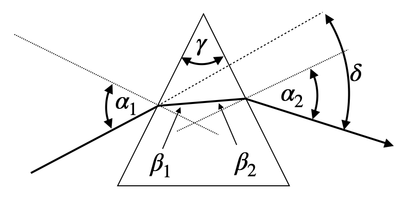
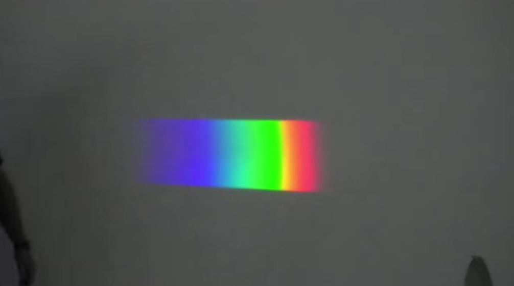
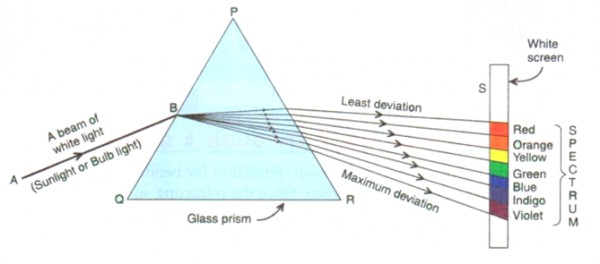
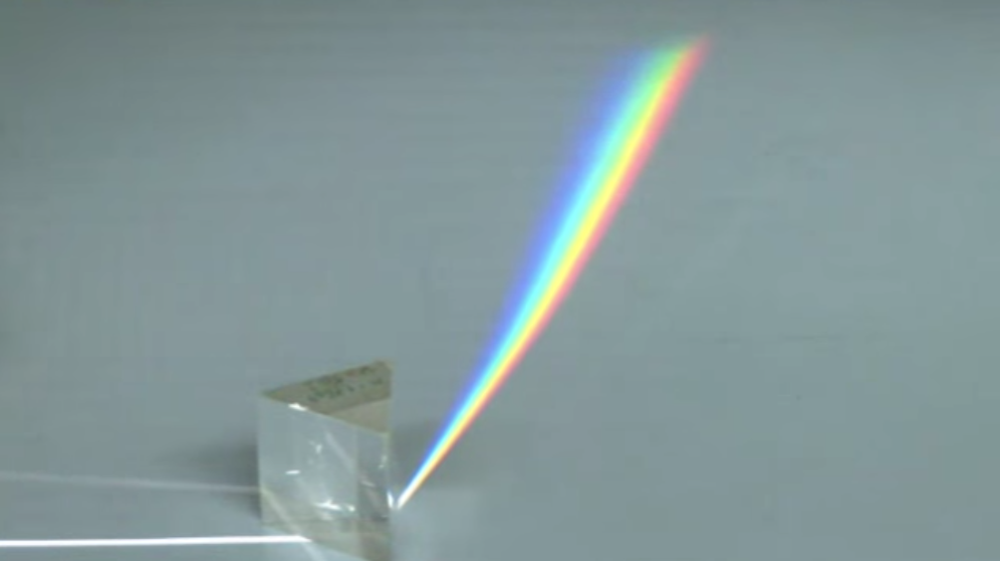
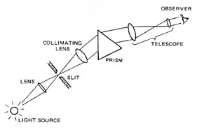
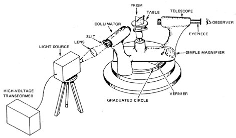
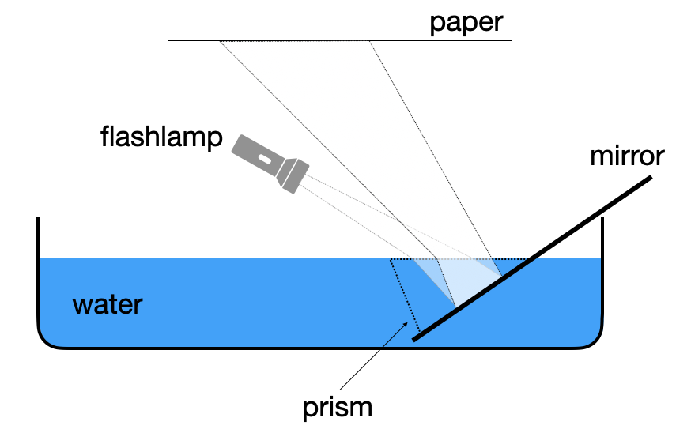

6 Optical Elements Part II
6.1 Prism
Prisms are wedge-shaped optical elements made of a transparent material, such as glass. A special form of such a prism is an isosceles prism with two sides of equal length. The two equal sides enclose an angle \(\gamma\), known as the apex angle of the prism. When light passes through this prism, it undergoes refraction twice.
First, the incident angle \(\alpha_1\) is changed into a refracted angle \(\beta_1\) as the light enters the prism. This refracted ray then hits the second interface at an angle \(\beta_2\), leading to a second refraction as it exits the prism at an angle \(\alpha_2\).
Of particular interest is the total deflection of the incident ray, which is measured by the angle \(\delta\). This deflection angle represents the difference between the final outgoing angle \(\alpha_2\) and the initial incident angle \(\alpha_1\).
Understanding how this deflection angle changes based on the prism’s properties and the incident angle is crucial in various optical applications. In the following sections, we will explore how to calculate this deflection angle and examine its dependence on different parameters.

6.1.1 Deflection angle
We can calculate the deflection angle \(\delta\) from a number of considerations. First consider the following relations between the angles in the prism and Snell’s law
\[\beta_1=\sin^{-1}\left (\frac{n_0}{n_1}\sin(\alpha_1) \right)\] \[\beta_2=\gamma-\beta_1\] \[\alpha_2=\sin^{-1}\left (\frac{n_1}{n_0}\sin(\beta_2)\right )\] \[\theta_2=\alpha_2-\gamma\]
where \(\theta_2\) is the angle between the incident surface normal and the outgoing ray. The total deflection angle \(\delta\) is then
\[\delta =\alpha_1-\beta_1+\alpha_2-\beta_2\]
or
\[\delta =\alpha_1+\alpha_2-\gamma\]
from which we obtain
\[\delta=\alpha_1+\sin^{-1}\left (\frac{n_1}{n_0}\sin\left [\gamma-\sin^{-1}\left (\frac{n_0}{n_1}\sin(\alpha_1) \right)\right]\right )-\gamma\]
as the deflection angle.
6.1.2 Minimum deflection angle
If we now would like to know how the deflection angle changes with the incident angle \(\alpha_1\), we calculate the derivative of the deflection angle \(\delta\) with respect to \(\alpha_1\), i.e.,
\[\frac{\mathrm d\delta}{\mathrm d\alpha_1}=1+\frac{\mathrm d\alpha_2}{\mathrm d \alpha_1}.\]
We are here especially interested in the case, where this change in deflection is reaching a minimum, i.e., \(\mathrm d\delta/\mathrm d\alpha_1 =0\). This readily yields
\[\mathrm d \alpha_2=-\mathrm d\alpha_1.\]
This means a change in the incidence angle \(\mathrm d\alpha_1\) yields an opposite change in the outgoing angle \(-\mathrm d\alpha_2\). We may later observe that in the experiment.
As both, the incident and the outgoing angle are related to each other by Snells’s law, we may introduce the derivatives of Snell’s law for both interfaces, e.g.,
- \(\cos(\alpha_1)\mathrm d\alpha_1=n\cos(\beta_1)\mathrm d\beta_1\)
- \(\cos(\alpha_2)\mathrm d\alpha_2=n\cos(\beta_2)\mathrm d\beta_2\)
where \(n\) is the refractive index of the prism material and the material outside is air (\(n_{\rm air}=1\)). Replacing \(\cos(\alpha)=\sqrt{1-\sin^2(\alpha)}\) and dividing the two previous equations by each other readily yields
\[\frac{1-\sin^2(\alpha_1)}{1-\sin^2(\alpha_2)}=\frac{n^2-\sin^2(\alpha_1)}{n^2-\sin^2(\alpha_2)}.\]
The latter equation is for \(n\neq 1\) only satisfied if \(\alpha_1=\alpha_2=\alpha\). In this case, the light path through the prism must be symmetric and we may write down the minimum deflection angle \(\delta_{\rm min}\):
Minimum prism deflection
The minimum deflection angle of an isosceles prism with a prism angle \(\gamma\) is given by
\[\delta_{\rm min}=2\alpha-\gamma.\]
Given this minimum deflection angle \(\delta_{\rm min}\) and the properties of the prism, we may also write down Snell’s law using \(\sin(\alpha)=n\sin(\beta)\), which results in
\[\sin \left ( \frac{\delta_{\rm min}+\gamma}{2}\right )=n\sin\left (\frac{\gamma}{2}\right).\]
which indicates the dependence of the deflection in the refractive index \(n\) of the prism material.
6.1.3 Dispersion
Very important applications now arise from the fact, that the refractive index is a material property, which depends on the color (frequency or wavelength) of light. We do not yet understand the origin of this dependence. The plots below show the wavelength dependence of three different glasses. You may find much more data on the refractive index of different materials in an online database.


The plots have a general feature, which is that the refractive index is largest at small wavelength (blue colors), while it drops continuously with increasing wavelength towards the red (800 nm). If you would characterize the dependence by the slope, i.e., \(\mathrm dn/\mathrm d\lambda\) then all displayed curves show in the visible range
- \(\frac{\mathrm dn}{\mathrm d\lambda}<0\), is called normal dispersion
while
- \(\frac{\mathrm dn}{\mathrm d\lambda}>0\), is called anomalous dispersion
This wavelength dependence of the refractive index will yield a dependence of the deflection angle on the color of light as well. The change of the deflection angle with the refractive index can be calculated to be
\[\frac{\mathrm d\delta}{\mathrm d n}=\frac{2\sin(\gamma/2)}{\sqrt{1-n^2\sin^2(\gamma/2)}}\]
together with the relation
\[\frac{\mathrm d \delta}{\mathrm d \lambda}=\frac{\mathrm d\delta}{\mathrm d n}\frac{\mathrm d n}{\mathrm d\lambda}\]
we obtain
\[\frac{\mathrm d\delta}{\mathrm d\lambda}=\frac{2\sin(\gamma/2)}{\sqrt{1-n^2\sin^2(\gamma/2)}}\frac{\mathrm d n}{\mathrm d \lambda}.\]
The refraction of white light through a prism splits the different colors composing white light spatially into a colored spectrum. In this process, light with the longest wavelength (red) is deflected the least, while light with the shortest wavelength (violet) is deflected the most. This occurs because the refractive index of the prism material varies with wavelength, a phenomenon known as dispersion.



6.1.4 Prims spectrograph
This wavelength-dependent refraction is crucial as it forms the basis for spectroscopy, a powerful analytical technique that measures and records the intensity of light as a function of wavelength. Spectroscopy allows scientists to analyze the composition and properties of matter by examining its interaction with light across different wavelengths.


DIY prism
If you don’t have a prism at home (which most people don’t), you can create a simple substitute using a mirror and a basin of water. Here’s how:
- Place a mirror in a basin of water, partially submerged.
- Shine white light from a flashlight onto the mirror.
- Observe the reflected and refracted light, paying special attention to the edges.
For better results, you can create a small aperture by making a tiny hole in a piece of black paper and placing it in front of the flashlight.

While the dependence of water’s refractive index on wavelength is relatively weak, it’s still sufficient to demonstrate the familiar colors of the rainbow. This phenomenon will be referenced later in our discussion.

Applications of prims
Prisms are versatile optical components with a wide range of applications across various fields. Here are some common uses of prisms:
6.1.4.1 Binoculars and Telescopes:
Porro prisms in traditional binoculars and roof prisms in modern designs serve to correct image inversion and provide a compact form. These prisms enable a longer optical path within a shorter physical length, enhancing magnification while maintaining portability. This design is crucial for both binoculars and some telescopes, offering users powerful magnification in a handheld device.
6.1.4.2 Periscopes:
Right-angle prisms are the key component in periscopes, redirecting light at 90-degree angles. This simple yet effective design allows viewers to see over obstacles or around corners, making periscopes invaluable in submarines and various military applications where direct line of sight is obstructed.
6.1.4.3 Beam Splitting:
Cube beamsplitters play a vital role in dividing a single beam of light into two separate beams. This capability is essential in various scientific and medical applications, including interferometry, holography, and optical coherence tomography (OCT). The ability to split light beams precisely opens up numerous possibilities in research and diagnostics.
6.1.4.4 Beam Steering:
Risley prisms, consisting of a pair of rotating wedge prisms, offer precise control over laser beam direction. This technology finds applications in laser scanning, target tracking, and adaptive optics. The ability to steer beams accurately is crucial in fields ranging from military applications to advanced scientific research.
6.1.4.5 Digital Projectors:
Total Internal Reflection (TIR) prisms are a crucial component in Digital Light Processing (DLP) projectors. They direct light from the lamp to the Digital Micromirror Device (DMD) and then to the projection lens, enabling the high-quality image projection that DLP technology is known for.
6.1.4.6 Camera Systems:
In Single-Lens Reflex (SLR) cameras, pentaprisms play a critical role in the viewfinder system. They flip the image from the lens to appear upright and correctly oriented in the viewfinder, allowing photographers to accurately compose their shots.
6.1.4.7 Laser Systems:
Brewster prisms find use in laser systems for polarization and wavelength separation. Additionally, dispersing prisms can be employed for wavelength tuning in certain laser setups, providing precise control over the laser’s output characteristics.
6.1.4.8 Fiber Optic Communications:
In the realm of telecommunications, prisms are utilized in some fiber optic connectors and switches. They help redirect light between fibers, playing a crucial role in maintaining signal integrity and enabling complex network architectures.
6.1.4.9 Solar Energy:
Fresnel lenses, a specialized type of prism, are employed in concentrated solar power systems. These lenses focus sunlight efficiently, contributing to the development of more effective solar energy collection technologies.
6.1.4.10 Head-Up Displays (HUDs):
Prisms are an integral part of HUD systems in both automotive and aviation contexts. They project crucial information onto the windshield or a combiner glass, allowing drivers or pilots to access important data without taking their eyes off their primary viewpoint.
6.1.4.11 Microscopy:
Nomarski prisms enhance the capabilities of differential interference contrast microscopy. They increase contrast in transparent specimens, enabling scientists to observe details that would be difficult or impossible to see with conventional microscopy techniques.
6.1.4.12 Optical Coherence Tomography (OCT):
In some OCT systems, prisms are employed for sample arm scanning and reference arm delay. This application of prisms contributes to the high-resolution imaging capabilities of OCT, which is particularly valuable in medical diagnostics, especially in ophthalmology.